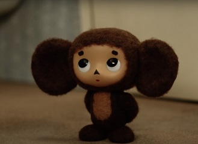

About
Я был когда-то странной Игрушкой безымянной, К которой в магазине Никто не подойдет. Теперь я - Чебурашка, Мне каждая дворняжка При встрече сразу лапу подает!.
Мне не везло сначала, И даже так бывало: Ко мне на день рожденья Никто не приходил. Теперь я вместе с Геной, Он не обыкновенный, А самый лучший в мире крокодил!.
Я был когда-то странной Игрушкой безымянной, К которой в магазине Никто не подойдет. Теперь я - Чебурашка, Мне каждая дворняжка При встрече сразу лапу подает!.